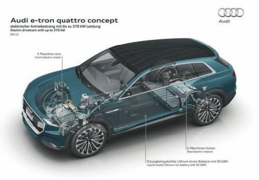
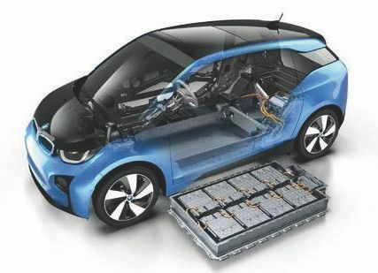
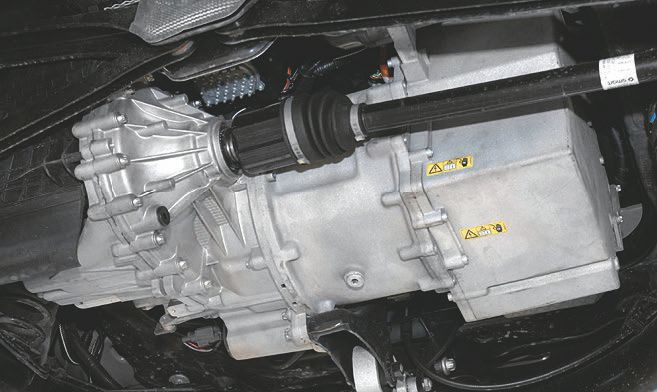

Слабое место электромобилей.
Бытует мнение, что электромобили изобрели совсем недавно. Это утверждение некорректно. Выше, в первом разделе главы 1, мы показали, что основа для электромобилей и теоретические идеи электрического транспорта возникли сразу же после изобретения электричества, или, по крайней мере, в том же временном отрезке. Другое дело, что путь, пройденный человечеством до индивидуальных средств передвижения (личных электромобилей) был довольно долгим – в силу ряда причин, связанных с движением научно-технического прогресса.
Первые (невоенные) электромобили были выпущены в Европе еще в 1954 году, на примере давно выпущенного в серию городского электромобиля Enfield 8000, допущенного для езды на «общественных» дорогах» (1974 года выпуска). Написан ряд статей, и часть из них переведена на русский язык. В конце XX века в СССР сумели создать и зарегистрировать в ГАИ единственный экземпляр электромобиля с базой автомобиля ВАЗ.
Сегодня только в Санкт-Петербурге зарегистрирован в ГИБДД 21 автомобиль, и в городе и области действует аж 15 (!) зарядных станций для электромобилей – по одной почти что на каждый экземпляр электромобиля. Кроме того, налажен массовый выпуск так называемых малых электрокаров, рассчитанных на небольшой (максимум 20 км) запас хода и вместимость 6–8 человек; такие машины используются локально, к примеру для экскурсионных прогулок в парках и вокруг дворцовых ансамблей.
Эксперты считают, что основной проблемой электромобилей является ограниченный запас хода. Относительно недорогие Nissan Leaf и Mitsubishi i-MiEV проезжают без подзарядки от 150 до 200 км. В городских условиях это приемлемо, а вот при выезде за МКАД водителя поджидают серьезные неприятности. Автолюбителю придется искать зарядную станцию и пару часов заряжать батареи. Таким образом, в большинстве российских регионов инфраструктуры для обслуживания электромобилей пока нет. Не стоит забывать и про суровые зимы, во время которых потенциальный ресурс аккумуляторных батарей снижается на 30–40 %. Если добавить к этому включенную систему отопления, навигатор и мультимедийный комплекс, то показатели снизятся еще сильнее.
В России самый доступный электромобиль можно приобрести за 1,3 млн рублей. На первый взгляд, неплохо. С другой стороны, в данном ценовом сегменте представлены более солидные кроссоверы и даже несколько внедорожников. С учетом плохого состояния большинства региональных дорог такой выбор кажется более актуальным.
Электромобиль Flux Capacitor, претендующий на звание супербыстрого электрокара, в июле 2016 года на гоночном треке Santa Pod Raceway в Нортгемптоншире (Великобритания) преодолел четверть мили (0,4 км) всего за 9,86 секунды, при этом имея предельную скорость 195 км/ч. Впоследствии этот электрокар снова прошел серию технических доработок, и теперь Flux Capacitor может похвастаться своим электродвигателем мощностью 800 л. с. и крутящим моментом в 1627 Н-м. Скорость разгона до 182 км/ч составляет всего 6 секунд. С такими показателями этот электромобиль может с легкостью обойти многие современные автомобили с «классическим» двигателем внутреннего сгорания (далее – ДВС). Но здесь речь идет о гоночном варианте электромобиля, в то время как «типовые» машины для общественного пользования имеют гораздо меньшую мощность. К примеру, на рис. 1.8 представлен электромобиль фирмы Ауди; на иллюстрации хорошо видно размещение основных приводных узлов современного электромобиля.
Кстати, электромобиль Enfield-8000 производился в Великобритании в 1973–1977 годах, производство его было закрыто в связи с нефтяными кризисами. Двухместный автомобиль был первоначально выполнен из стеклопластика и оснащен двумя 48-вольтными свинцово-кислотными батареями, предназначавшимися для грузовых автомобилей. Батарейное обеспечение – самый важный элемент современного автомобиля, именно с этим обсуждаемым и проблемным вопросом связывают и пути совершенствования электромобилей. Батарейный отсек и вид на батареи проиллюстрированы на рис. 1.9 по примеру электромобиля фирмы BMW.

Рис. 1.8. Размещение основных узлов современного электромобиля

Рис. 1.9. Батарейный отсек и вид на батареи электромобиля в BMW
Электромобиль Enfield-8000 в умелых руках был переработан. Оригинальные 300-килограммовые батареи были заменены современными 400-вольтными литий-ионными батареями. Батареи такого типа в основном используются для современных военных вертолетов Bell Super Cobra. Они весят всего 145 кг и выдают в 120 раз больше электроэнергии благодаря системе контроля разряда-заряда и управления, созданной компанией по электрической трансмиссии Hyperdrive. Аккумуляторы питают два электрических двигателя, установленных в туннеле карданного вала, который приводит в действие задние колеса (рис. 1.10).

Рис. 1.10. Трансмиссия, карданный вал и привод электромобиля: вид снизу